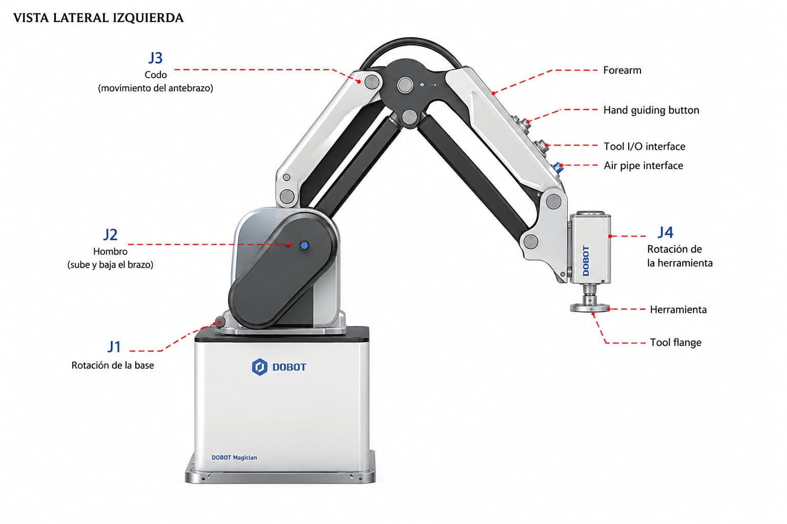
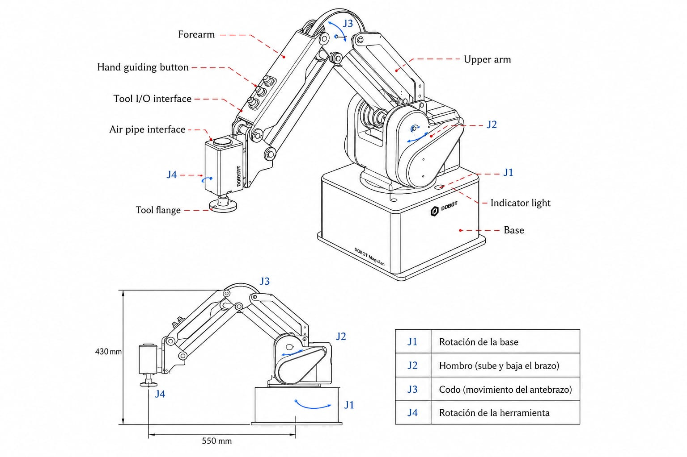

MG400 (Robot y Red)MG400 (Robot & Network)
Hardware, Conexiones y CalibraciónHardware, Connections & CalibrationAnatomía Colosal delColossal Anatomy of the MG400
Diagrama Interactivo de Gran EscalaLarge Scale Interactive Diagram
Este diagrama ampliado permite estudiar la estructura mecánica. Pasa el cursor sobre las esferas de energía parpadeantes para desglosar el hardware. This enlarged diagram allows studying the mechanical structure. Hover over the blinking energy spheres to break down the hardware.

Base y Módulo Central (J1)Base & Central Module (J1)
Cerebro del Sistema: Integra la controladora de movimiento, puertos de red, y la placa base de I/O de 24V. Pesa el 60% del equipo para dar estabilidad. System Brain: Integrates the motion controller, network ports, and the 24V I/O motherboard. Weighs 60% of the unit for stability.
Eje J1: Rotación panorámica de ±160°. Velocidad máxima soportada: 300°/s. Impulsado por un servomotor sin escobillas con reductor armónico. J1 Axis: Pan rotation of ±160°. Max supported speed: 300°/s. Driven by a brushless servo motor with harmonic reducer.
Brazo Primario (J2)Primary Arm (J2)
Columna Vertebral: Soporta las mayores fuerzas de palanca (Torque) cuando el robot está completamente extendido. Backbone: Supports the greatest lever forces (Torque) when the robot is fully extended.
Límites Físicos: -25° a 85°. Crucial: Cuenta con frenos electromagnéticos que se activan al perder energía para evitar que el brazo caiga por gravedad y dañe la mesa. Physical Limits: -25° to 85°. Crucial: Has electromagnetic brakes that activate on power loss to prevent the arm from falling and damaging the desk.
Brazo Secundario (J3)Secondary Arm (J3)
Alta Dinámica: Construido en aleación de aluminio aeroespacial para reducir la inercia, permitiendo movimientos rápidos de ensamblaje tipo SCARA. High Dynamics: Built in aerospace aluminum alloy to reduce inertia, allowing for fast SCARA-like assembly movements.
Límites Físicos: -10° a 95°. Su algoritmo *TrueMotion* suprime la vibración armónica generada durante frenados abruptos. Physical Limits: -10° to 95°. Its *TrueMotion* algorithm suppresses harmonic vibration generated during abrupt braking.
Brida de Herramienta (J4 / TCP)Tool Flange (J4 / TCP)
Tool Center Point: Interfaz de acople mecánico estándar ISO. Permite rotación infinita de ±360°. Tool Center Point: Standard ISO mechanical coupling interface. Allows infinite rotation of ±360°.
Conexión Rápida: Integra un puerto tipo aviación que provee 2 entradas, 2 salidas y alimentación 24VDC directo a la punta, evitando enredar cables largos. Fast Connection: Integrates an aviation-type port providing 2 inputs, 2 outputs and 24VDC directly to the tip, avoiding long tangled wires.
Forearm (Antebrazo)Forearm
Cubierta protectora del brazo secundario. Aloja internamente el cableado hacia la brida y protege los mecanismos de transmisión de la muñeca (J4). Protective cover of the secondary arm. Internally houses the wiring to the flange and protects the wrist transmission mechanisms (J4).
Hand Guiding Button
Botón de enseñanza manual. Al presionarlo, libera los frenos de los servomotores permitiendo mover el robot libremente con la mano para grabar puntos de trayectoria (Drag-to-Teach) sin usar software. Manual teaching button. Pressing it releases the servo brakes allowing you to move the robot freely by hand to record trajectory points (Drag-to-Teach) without software.
Tool I/O Interface
Conector eléctrico rápido (aviación) ubicado estratégicamente cerca del efector final. Provee energía de 24V y señales I/O a grippers, ventosas o láseres sin pasar cables desde la base. Fast electrical connector (aviation) strategically located near the end effector. Provides 24V power and I/O signals to grippers, suction cups, or lasers without routing cables from the base.
Air Pipe Interface
Entrada neumática (conector azul). Permite conectar mangueras de aire comprimido desde el compresor directamente al brazo para accionar ventosas de vacío o pinzas neumáticas. Pneumatic input (blue connector). Allows connecting compressed air hoses directly from the compressor to the arm to drive vacuum cups or pneumatic grippers.
Ficha Técnica y Rendimiento RealTechnical Sheet & Real Performance
Datos extraídos de las tablas oficiales de ingeniería de Dobot. Estos parámetros determinan los límites seguros de operación. Data extracted from official Dobot engineering tables. These parameters determine safe operating limits.
Rendimiento FísicoPhysical Performance
- Carga Útil (Payload)Payload Nominal: 500g | Máx: 750gNominal: 500g | Max: 750g
Exceder 750g activará alarma de sobrecorriente.Exceeding 750g will trigger an overcurrent alarm. - RepetibilidadRepeatability ±0.05 mm
- Grados de LibertadDegrees of Freedom 4 Ejes (Tipo SCARA Híbrido)4 Axis (Hybrid SCARA Type)
- Peso Neto del SistemaSystem Net Weight 8.0 kg
Cinemática (Velocidades)Kinematics (Speeds)
- Velocidad Máx. Eje J1Max Speed J1 Axis 300 °/s
- Velocidad Máx. Eje J2Max Speed J2 Axis 300 °/s
- Velocidad Máx. Eje J3Max Speed J3 Axis 300 °/s
- Velocidad Máx. Eje J4Max Speed J4 Axis 300 °/s
Requisitos EléctricosElectrical Requirements
- Voltaje de EntradaInput Voltage DC 48V
- Potencia NominalRated Power 150 W
- Corriente MáximaMaximum Current 10 A
- Nivel Lógico I/OI/O Logic Level 24V DC
Planos Mecánicos y Volumen de TrabajoMechanical Plans & Workspace Volume
El análisis del "Workspace" (Espacio de trabajo) es el primer paso antes de anclar el robot. El MG400 tiene un alcance esférico de 440 mm.Workspace analysis is the first step before anchoring the robot. The MG400 has a spherical reach of 440 mm.
Peligro de Singularidad: Existe una zona cilíndrica ciega justo en el centro del robot (cerca del eje vertical). Si programas trayectorias lineales (MovL) que atraviesen este eje central, el robot generará un "Error de Singularidad" matemático y se detendrá bruscamente, ya que requiere velocidades articulares infinitas para cruzar el centro.Singularity Danger: There is a blind cylindrical zone right in the center of the robot (near the vertical axis). If you program linear trajectories (MovL) that cross this central axis, the robot will generate a mathematical "Singularity Error" and stop abruptly, as it requires infinite joint speeds to cross the center.
Advertencia de Colisión BaseBase Collision Warning
El Eje J2 puede bajar hasta -25°. Si montas una herramienta larga en la brida (Flange), existe un alto riesgo de que la herramienta colisione violentamente contra la propia base del robot al bajar. ¡Mide el Tool Offset (TCP)!J2 Axis can go down to -25°. If you mount a long tool on the flange, there is a high risk of the tool violently colliding with the robot's own base when lowering. Measure your Tool Offset (TCP)!

Galería Técnica AdicionalAdditional Technical Gallery
Visualización de componentes y diagramas adicionales proporcionados.Visualization of additional components and diagrams provided.

Protocolos de Instalación y AmbienteInstallation & Environment Protocols
El incumplimiento de estas normativas extraídas del manual invalida la calibración de precisión del MG400.Failure to comply with these regulations extracted from the manual invalidates the precision calibration of the MG400.
Montaje y SujeciónMounting and Fastening
- Pernos Requeridos:Required Bolts: Cuatro tornillos M5 con rondanas de presión (Spring Washers).Four M5 screws with spring washers.
- Grosor de Mesa:Desk Thickness: La superficie de anclaje debe tener al menos 20mm de acero o aluminio sólido para evitar resonancia armónica.The anchor surface must have at least 20mm of solid steel or aluminum to avoid harmonic resonance.
- Prohibido:Prohibited: Montar el robot en superficies de madera o plástico hueco. Las vibraciones destruirían la repetibilidad de 0.05mm.Mounting the robot on wood or hollow plastic surfaces. Vibrations will destroy the 0.05mm repeatability.
Condiciones AmbientalesEnvironmental Conditions
- Temperatura Operativa:Operating Temp: 0°C a 40°C. Si los servomotores superan los 85°C internamente, el robot lanzará alarma por sobrecalentamiento.0°C to 40°C. If servos exceed 85°C internally, the robot throws an overheating alarm.
- Humedad Relativa:Relative Humidity: 5% a 95% (Sin condensación). El rocío cortocircuita los encóderes ópticos absolutos.5% to 95% (Non-condensing). Dew short-circuits absolute optical encoders.
- Grado IP:IP Grade: IP20. No es resistente a salpicaduras de agua, aceite de corte ni polvos metálicos gruesos.IP20. Not resistant to water splashes, cutting oil, or thick metal dust.
Ingeniería Eléctrica: Puertos I/OElectrical Engineering: I/O Ports
Esta sección contiene la arquitectura eléctrica vital para integrar el MG400 con PLCs (Siemens, Allen-Bradley), sensores capacitivos, y neumática SMC/Festo. El robot trabaja bajo el estándar industrial de 24VDC. This section contains the vital electrical architecture for integrating the MG400 with PLCs (Siemens, Allen-Bradley), capacitive sensors, and SMC/Festo pneumatics. The robot works under the 24VDC industrial standard.
Digital Inputs (DI) - 16 Canales Base + 2 Canales BridaDigital Inputs (DI) - 16 Base Channels + 2 Flange Channels
Pines:Pins: DI_1 ... DI_16
Las entradas están optoaisladas. Soportan tanto lógica PNP (Sourcing) como NPN (Sinking), lo cual se configura puenteando el pin COM. Inputs are optoisolated. They support both PNP (Sourcing) and NPN (Sinking) logic, which is configured by bridging the COM pin.
- Nivel bajo (Low) confiable: 0V a 5V.Reliable Low level: 0V to 5V.
- Nivel alto (High) confiable: 11V a 30V.Reliable High level: 11V to 30V.
- Corriente de entrada típica: 5 mA.Typical input current: 5 mA.
Digital Outputs (DO) - 16 Canales Base + 2 Canales BridaDigital Outputs (DO) - 16 Base Channels + 2 Flange Channels
Pines:Pins: DO_1 ... DO_16
Las salidas son de tipo Colector Abierto NPN. Esto significa que cuando el robot "enciende" una salida, el pin se conecta internamente a GND (0V). Outputs are Open Collector NPN type. This means when the robot "turns on" an output, the pin is internally connected to GND (0V).
- Corriente máxima continua por canal: 500 mA.Continuous max current per channel: 500 mA.
- Corriente máxima total sumando todos los pines: 2 Amperios.Total max current summing all pins: 2 Amperes.
Peligro Inductivo:Inductive Hazard:
Si conecta directamente la bobina de un relevador electromecánico o una electroválvula neumática a las DO del robot sin un diodo Flyback (diodo de rueda libre) instalado en antiparalelo, la corriente inversa al apagar la bobina destruirá el optoacoplador del robot en fracciones de segundo.
If you directly connect an electromechanical relay coil or a pneumatic solenoid valve to the robot's DO without a Flyback diode (freewheeling diode) installed in antiparallel, the reverse current when turning off the coil will destroy the robot's optocoupler in fractions of a second.
Hardware E-STOP (Paro de Emergencia)Hardware E-STOP (Emergency Stop)
El puerto I/O trasero cuenta con terminales E-STOP (+ y -). Para que el robot funcione, este circuito debe estar cerrado. Si el circuito se abre (presionando un hongo de emergencia externo), un relevador de hardware interno corta físicamente la energía a los drivers de los servomotores (Categoría 0 Stop), lo cual es el nivel más alto de seguridad industrial, independiente de caídas de software. The rear I/O port features E-STOP (+ and -) terminals. For the robot to work, this circuit must be closed. If the circuit opens (by pressing an external emergency mushroom button), an internal hardware relay physically cuts power to the servo motor drivers (Category 0 Stop), which is the highest level of industrial safety, independent of software crashes.
Conexiones de Red y Configuración IPNetwork Connections & IP Setup
Para controlar y programar el MG400 a través de DobotStudio Pro o sistemas externos, se establece una comunicación TCP/IP por Ethernet o WiFi. A continuación, se detalla el procedimiento paso a paso. To control and program the MG400 via DobotStudio Pro or external systems, TCP/IP communication is established via Ethernet or WiFi. The step-by-step procedure is detailed below.
Direcciones IP por Defecto del RobotDefault Robot IP Addresses
- LAN1 (Puerto Ethernet base): 192.168.1.6 Usado típicamente para conexión directa con la PC de desarrollo. Typically used for direct connection with the development PC.
- LAN2 (Puerto Ethernet base adicional): 192.168.2.6 Usado frecuentemente para conectar dispositivos esclavos Modbus, PLCs o cámaras de visión. Frequently used to connect Modbus slave devices, PLCs or vision cameras.
-
Conexión WiFi (Punto de Acceso):
SSID predeterminado:
MG400_XXXX(las X son la dirección MAC) Default SSID:MG400_XXXX(X represents the MAC address) Contraseña por defecto:1234567890Default password:1234567890Se puede modificar el SSID y la contraseña en la configuración de DobotStudio Pro (requiere reiniciar el controlador). SSID and password can be modified in DobotStudio Pro settings (requires controller restart).
Configuración de la PC (Paso a Paso en Windows)PC Configuration (Step-by-Step in Windows)
La tarjeta de red de la PC debe estar configurada en el mismo segmento de red que el robot (ej. 192.168.1.X) para poder comunicarse. The PC's network card must be configured in the same network segment as the robot (e.g., 192.168.1.X) to communicate.
- Abre el Panel de Control en tu computadora. Open the Control Panel on your computer.
- Entra a Redes e Internet > Centro de redes y recursos compartidos. Go to Network and Internet > Network and Sharing Center.
- Haz clic en Cambiar configuración del adaptador en la barra lateral izquierda. Click Change adapter settings on the left sidebar.
- Haz clic derecho en la conexión de Ethernet (donde conectaste el cable del robot) y selecciona Propiedades. Right-click on the Ethernet connection (where you plugged the robot cable) and select Properties.
- Busca y haz doble clic en Protocolo de Internet versión 4 (TCP/IPv4). Find and double-click Internet Protocol Version 4 (TCP/IPv4).
-
Selecciona "Usar la siguiente dirección IP" y escribe lo siguiente:
Select "Use the following IP address" and type the following:
IP: 192.168.1.100 (cualquiera entre 2 y 254, excepto la 6)
Máscara: 255.255.255.0
- Haz clic en Aceptar en ambas ventanas para aplicar los cambios. Click OK in both windows to apply the changes.
-
Prueba de Conexión (Ping): Abre la consola de Windows (presiona Win+R, escribe
cmd, presiona Enter) y ejecuta: Connection Test (Ping): Open Windows Command Prompt (press Win+R, typecmd, hit Enter) and run:ping 192.168.1.6Si hay respuesta (0% paquetes perdidos), la conexión física y de red es correcta. If there is a response (0% package loss), the physical and network connection is correct.
Procedimientos de Calibración FísicaPhysical Calibration Procedures
La calibración es obligatoria si se reemplazan piezas mecánicas (servomotores, reductores armónicos) o si el brazo sufre una colisión fuerte que desplace el punto cero. Esto garantiza la repetibilidad industrial de 0.05 mm. Calibration is mandatory if mechanical parts are replaced (servo motors, harmonic reducers) or if the arm suffers a strong collision that displaces the zero point. This guarantees industrial repeatability of 0.05 mm.
Calibración de Inicio (Home Calibration) del MG400MG400 Home Calibration
Este procedimiento alinea físicamente las articulaciones utilizando un bloque de calibración de metal provisto con el robot. This procedure physically aligns the joints using a metal calibration block provided with the robot.
Seguridad:Safety:
Esta acción requiere privilegios de administrador en DobotStudio Pro (contraseña predeterminada:
888888). Realícela con extrema precaución.
This action requires administrator privileges in DobotStudio Pro (default password: 888888). Perform with extreme caution.
- Colocación del Bloque:Block Placement: Coloca el bloque de calibración de metal en la base, lo más cerca posible de la placa giratoria (eje J1). Asegúrate de que la ranura convexa en la base del bloque encaje en el espacio indicado del robot, con el lado corto orientado hacia el brazo superior. Place the metal calibration block on the base, as close as possible to the turntable (J1 axis). Ensure the convex slot at the base of the block fits into the indicated space of the robot, with the short side facing the upper arm.
- Alineación del eje J1:J1 Axis Alignment: Gira el eje J1 manualmente (utilizando el botón de arrastre físico en el robot o mediante el panel Jog) para que la placa giratoria quede paralela y cercana al bloque de calibración. Rotate the J1 axis manually (using the physical hand-guided button on the robot or via Jog panel) so the turntable is parallel and close to the calibration block.
- Alineación de J2 y J3:J2 and J3 Alignment: Presiona el botón de enseñanza manual (botón de desbloqueo de motores en el cabezal del robot) y arrastra los ejes J2 y J3 para que el brazo superior quede paralelo y cercano al bloque de calibración. El ángulo entre el brazo superior y el antebrazo debe ser mayor a 90 grados. Press the physical motor release button on the robot head and drag axes J2 and J3 so the upper arm is parallel and close to the calibration block. The angle between the upper arm and forearm must be greater than 90 degrees.
- Ajuste fino del Antebrazo:Forearm Fine Adjustment: Coloca el bloque en el ángulo formado entre el brazo superior y el antebrazo. Con el panel de jog (jog board) en el software, mueve el eje J3 lentamente hasta que el antebrazo quede perfectamente paralelo y en contacto con el lado corto del bloque. Place the block in the angle formed between the upper arm and the forearm. Using the software jog board, move axis J3 slowly until the forearm is perfectly parallel and in contact with the short side of the block.
- Confirmación:Confirmation: En la sección de Calibración de DobotStudio Pro, introduce la contraseña `888888` y haz clic en "Home Calibration". Tras confirmar, los valores de coordenadas articulares en el panel de control manual (jog board) se reiniciarán a cero y el brazo quedará calibrado. In the DobotStudio Pro Calibration section, enter password `888888` and click "Home Calibration". After confirming, joint coordinate values in the manual control panel (jog board) will reset to zero and the arm will be calibrated.
Calibración Manual de Precisión Absoluta (M1 Pro)Absolute Precision Manual Calibration (M1 Pro)
Para el robot SCARA M1 Pro, el manual detalla una calibración manual de dos puntos en caso de pérdida de precisión absoluta: For the SCARA M1 Pro robot, the manual details a two-point manual calibration in case of absolute precision loss:
- Accede a la calibración en los ajustes avanzados con la contraseña de administrador
888888.Access the calibration in advanced settings with the administrator password888888. - Posición Izquierda: Mueve manualmente el robot a un punto de referencia en la mesa en dirección izquierda (configuración zurda del brazo) y haz clic en "Get P1".Left Position: Manually move the robot to a reference point on the table in a left-hand direction (lefty arm configuration) and click "Get P1".
- Posición Derecha: Lleva el robot exactamente al mismo punto físico en la mesa, pero orientando el brazo en dirección derecha (configuración diestra) y haz clic en "Get P2".Right Position: Bring the robot to the exact same physical point on the table, but orienting the arm in a right-hand direction (righty configuration) and click "Get P2".
- Haz clic en "Calibration". El sistema recalcula el offset interno del eje J2 para que ambas posturas sean perfectamente axisimétricas, restaurando la precisión.Click "Calibration". The system recalculates the internal offset of the J2 axis so both postures are perfectly axisymmetrical, restoring precision.
Calendario de Mantenimiento PreventivoPreventive Maintenance Schedule
Un cobot industrial sin mantenimiento pierde su repetibilidad. Acciones requeridas por el manual: An industrial cobot without maintenance loses its repeatability. Actions required by the manual:
- Diario:Daily: Limpieza de la carcasa externa. Verificación visual del apriete de los cables de la herramienta (Flange).Cleaning the external casing. Visual check of the tool cable tightness (Flange).
- Cada 3 meses:Every 3 months: Verificación de los pernos de montaje de la base. Resellado de los puertos si están expuestos a polvo industrial ligero.Verification of the base mounting bolts. Resealing the ports if exposed to light industrial dust.
- Cada 10,000 horas de trabajo:Every 10,000 working hours: Reemplazo/lubricación de los reductores armónicos de los ejes J1 y J2 por personal certificado de Dobot.Replacement/lubrication of the harmonic reducers of axes J1 and J2 by certified Dobot personnel.